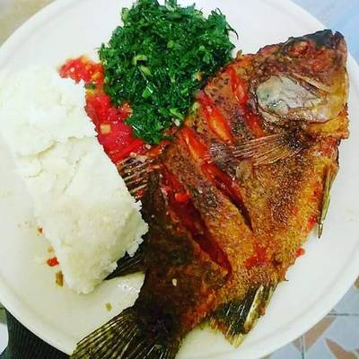

Ugali_Fish Recipes
Home

Description
Ugali_Fish is a beloved East African meal that brings together the hearty, comforting texture of ugali and the rich, flavorful taste of fried or stewed fish. Ugali, made by cooking maize flour in boiling water until thick and firm, serves as the perfect base to soak up the fish is savory sauce or juices.
The fish, often tilapia or another local variety, is usually seasoned with spices, garlic, and tomatoes, then fried or simmered in a fragrant sauce. This simple yet satisfying dish is enjoyed with friends and family, offering a balance of flavors and textures that reflect the warmth of East African cooking.
Ingredients
- Maize flour, for ugali
- Water
- Tilapia or other fish
- Garlic, minced
- Onion, chopped
- Tomatoes, chopped
- Garlic minced
- Cooking Oil
- Black pepper
- Lemon, optional, for marinating or serving
Steps
- Boil water in a pot, then gradually add maize flour while stirring to make ugali; cook until firm and smooth.
- Set the ugali aside and keep warm.
- Clean the fish and season it with salt, black pepper, and a squeeze of lemon (optional).
- Heat cooking oil in a pan and fry the fish on both sides until golden and cooked through; remove and set aside.
- In the same pan, add chopped onions and sauté until soft.
- Add minced garlic and cook for another minute.
- Stir in chopped tomatoes and cook until they break down into a thick sauce.
- Season the sauce with salt and pepper to taste.
- Return the fried fish to the pan and simmer for a few minutes in the sauce.
- Serve the fish hot alongside the warm ugali.
Thank You and Enjoy Your meal